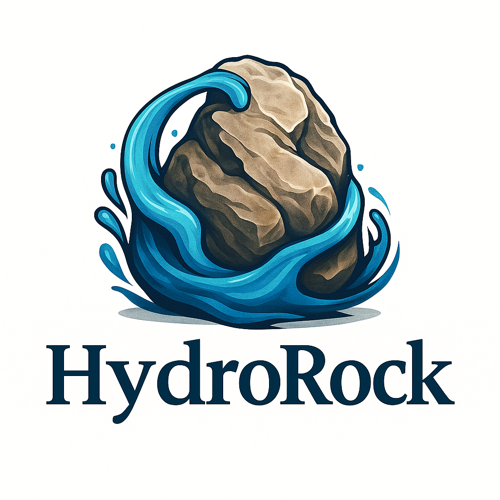

Hydroponics Interactive Learning Hub
Explore, Learn, and Grow with Interactive Educational Tools
Interactive Video Lessons
Watch and engage with videos that include questions, hotspots, and branching scenarios.
Drag-and-Drop Simulations
Build your own hydroponic system with interactive drag-and-drop elements and instant feedback.
Data Exploration Widgets
Explore real-time plant growth data and simulate changes in pH, temperature, and more.
Virtual Garden Tracker
Track your virtual garden progress and earn badges for milestones and growth achievements.
Interactive Story Journey
Become a virtual hydroponics farmer and make decisions that affect plant growth outcomes.